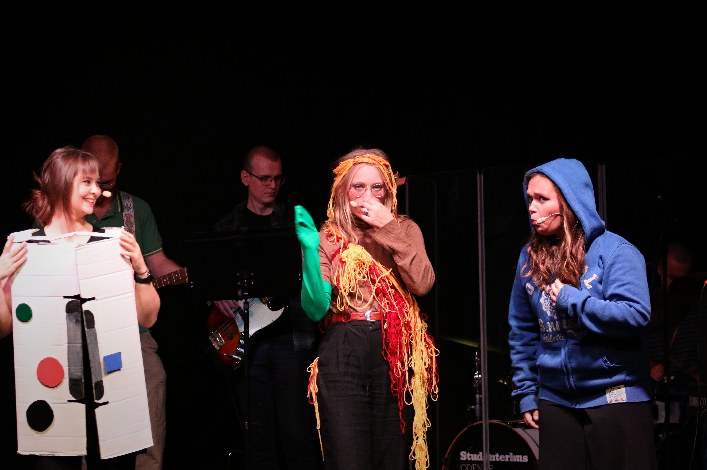
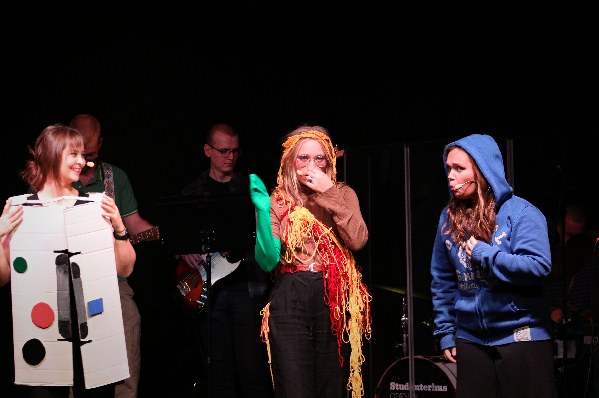

Historie
NAT-revyen stiftet i efteråret 2023 af Rebecka Birk Jensen og Mads Højsanger. Rebecka og Mads ville gerne starte et socialt fællesskab med fokus på kreativ udfoldelse på det naturfaglige fakultet. Der blev derfor holdt stiftende generalforsamling den 29. november 2023. Således startede den første revy-sæson i NAT-revyen, som kulminerede med forestillingen Kald det NAT-revy.
Foreningen
I dag har NAT-revyen ca. 30 medlemmer, primært fra de naturvidenskablige uddannelser på SDU. Vi har et livligt socialt fællesskab i foreningen, og mødes til sociale arrangementer 2-3 gange hver måned (lidt mindre i ferie- og eksamensperioder).
Vi er en frivillig forening af studerende, og vi er afhængige af donationer, sponsorater og frivilligt arbejde for at vi kan leje lokaler, lave kostumer og hyre en lydmand til vores forestillinger.
Hjemmesiden
Hjemmesiden hostes gennem Github Pages. Kildekoden er åben og kan findes her.
 
